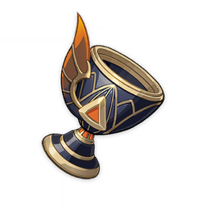
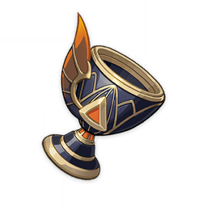

На 8 сек. после вызова элементальной реакции согласно элементам других персонажей в отряде экипированный этими артефактами персонаж получает следующие усиления:
сила атаки повышается на 14% за каждого персонажа с таким же элементом, как у экипированного персонажа; мастерство стихий повышается на 50 ед. за каждого персонажа с иным элементом. Каждое из этих усилений при подсчёте включает до 3 персонажей.
Эффект может возникнуть один раз в 8 сек. Срабатывает, даже если экипированный этими артефактами персонаж не на поле боя.

© 2022. «Cognosphere». Все права защищены